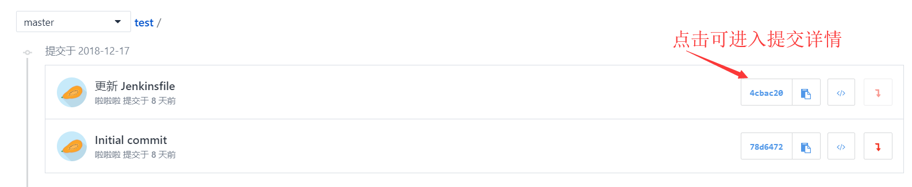

代码浏览
进入项目后，点击 代码 —>代码浏览，进入代码浏览页面。
提交历史
点击提交历史按钮，默认进入 master 分支的提交历史，提交历史按照日期倒序排列。可切换 master 为其他分支，查看其他分支的提交历史。可从当前页面进入某个代码提交详情或代码版本。
提交详情
点击提交地址，进入提交详情。页面上方显示该提交基本信息，下方显示代码文件的提交改动信息。用户可发布代码行级评论。

代码行级对比
普通模式下，代码文件中会显示该提交改动信息，按照单个文件显示具体的提交改动。每个文件内会显示具体的行级增删修改信息。其中，绿色代表增加，红色代码减少。
代码左右对比
点击左右模式，代码行级对比由普通模式切换为左右模式。用户可清晰地看出当前代码改了哪一行，修改了什么。
高级选项
高级选项默认开启显示制表符、行内对比、代码高亮，如果您不需要此项功能，可以点击绿色小红点开关关闭。
收起&展开
用户进入提交详情页，当改动文件数较少时，默认全部展开，当改动文件数较多时，默认全部收起。用户可点击文件名，单独展开或者收起单个文件，或者点击右侧全部展开和全部收起按钮，展开或收起全部文件对比。
代码文件新建/上传
点击新建或上传文件按钮，即可为当前分支新增一个一级目录代码文件，需要填写文件名、文件内容、文件提交信息。其中上传文件支持所有文件格式，单个文件不超过 20 M。
此处还可以勾选 为这次提交创建一个新分支，并发起一个合并请求 选项，系统会自动以当前分支为基点创建一个新分支，并自动向当前分支提交合并请求。
寻找文件
点击寻找文件按钮，输入需要寻找的关键字对文件列表进行过滤。 使用 ↑ 和 ↓ 来选择文件， 按Enter查看文件内容。 或按Esc 退出寻找文件。
下载
点击下载按钮，系统会自动以 企业域名-项目名-分支名.zip 下载当前分支对应的 Git 仓库版本。
点击新建分支按钮，在弹窗中输入新的分支名，并输入分支起点——分支、标签、commit id 均可，若不填写，默认以 master 分支为起点。

设置默认分支
项目管理员点击设置/修改默认分支按钮，在弹窗中选中目标分支并提交，即可修改默认分支。
设置保护分支
『保护分支』是 CODING 针对 Git 中有关代码权限开发的一个功能，阅读之前，请先了解分支的基本概念和用法，详情见 Git 分支管理。简而言之，保护分支就是将特定的分支保护起来，防止被破坏。
项目管理员点击分支最右侧的 … 图标，点击设置保护分支，在弹窗中进行设置。
开启保护分支后，该分支在分支列表中将以绿色盾牌为标志。成员修改保护分支时需先新建一个分支进行修改， 然后创建合并请求并邀请其他成员评审代码。 其他成员「允许合并」后可自行合并分支。

分支管理员
分支管理员为可选项。 添加分支管理员后， 所有合并请求需分支管理员「允许合并」。 分支管理员默认也受保护分支限制， 需创建合并请求修改分支。若将其设置为「允许直接 Push」，分支管理员则可以直接修改分支。
若成员没有权限（即保护分支的非分支管理员） push 至该分支，当其尝试 push 至该分支的时候，会得到如下错误提示：
所以，当你看到这个错误提示的时候，就知道是因为没有该保护分支权限而导致 push 失败了。
允许&禁止 Force Push
项目管理员点击分支最右侧的 【 … 】图标 ，点击设置保护分支，在弹窗中进行设置开启或关闭允许 Force Push。
当对 Git 仓库某分支开启禁止 Force Push 的选项后，服务器会对推送至这个分支的更新做 『快进模式检查』（FastForwarded Update Check）。如果不是以 『快进模式（ FastForwarded ）』更新，则会被服务器拒绝更新，以防误操作导致丢失代码历史，会在命令行提示如下错误：
发布管理
版本发布
进入『代码』—>『发布管理 』
选择新建版本发布—>创建版本发布，填写标签版本，版本发布标题，支持所有文件格式，单个文件不能超过100M，可以设定为预发布。
标签功能
进入『代码』—>『标签 』。
选择标签—>新建标签，填写标签版本，标签说明。
版本对比
选择新版本对比，选择要对比的分支，可以选择提交记录和查看文件改动。
选择新建合并请求，输入合并请求标题和描述内容，可以添加评审者、标签和关注者。
合并请求
版本对比之后创建合并请求跳转到合并请求控制台，可以查看之前创建的请求的动态、提交记录、文件改动、评审者、标签和关注者等信息，也可以再为此次合并请求添加评论。
通过命令行创建 MR
- push 到 mr/master/branch_name 分支即可自动创建远端分支并提交 MR（合并入 master ），如$ git push origin Feature-X:mr/master/Feature-X
- 自动创建的使用最后一个『commit message』作为标题和内容
- 自动解析『commit message』中 @ 的人，自动加成评审者，自动# 加为关联资源
- 自动创建出来的新的分支，只能由创建者再次『push』到这个分支，也允许『Force push』
『Merge Request』 中的代码评审
『Merge Request』可以进行代码评审。『Merge Request』的发起者，可以在创建 『Merge Request』 的时候选择邀请项目内的其他成员来评审此 『Merge Request』。
也可以在 『Merge Request』 被创建后，在 『Merge Request』 的右侧选择添加或取消评审者。
项目内所有拥有代码访问权限的成员都可以对未合并的 『Merge Request』进行评审。 评审的内容包括：
- 直接评论 『Merge Request』；
- 针对 『Merge Request』 的文件改动中的某一行代码进行评论；
非 『Merge Request』 发起人可以对此 『Merge Request』 进行『+1』操作 ，『+1』自己的会出现在『Merge Request』右侧评审者中
当 『Merge Request』 的发起者不具备目标分支的编辑权限时，拥有目标分支编辑权限的用户，可以对此 『Merge Request』 进行授权操作。授权后，『Merge Request』 的发起人，可自行合并此 『Merge Request』。
使用『#』符号引用资源
每个任务，讨论，MR 也有一个独特的引用 ID， 并通过『#ID』被引用到项目内其它地方。 项目内支持 Markdown 编辑器的地方都支持『#』自动提示(任务描述、讨论、合并请求描述等)，并引用相应资源。
- 讨论
- 『Merge Request』
代码行级比对
代码行级比对( Line Notes ) 是 腾讯云开发者平台开发的可以针对代码的『diff』进行行级别的评论功能，支持 Markdown 语法，可以方便的用来进行『Code Review』。 你可以在代码『commit』页面，以及合并请求( MR ) 页面使用该功能。
选择合并分支后，会有删除源分支，Fast-Forward模式合并选项，可根据自己需求选择。
点击合并请求后可以查看到创建的合并请求记录；也可在合并请求中查看具体信息，如：目标分支、发起者、分类标签、评审者、更新时间等。点击新建合并请求后会跳转到版本对比控制台。
项目网络
选择项目网络，可以查看到之前对于此项目的一些合并，修改操作网络图。
Pages服务
静态 Coding Pages 允许的部署分支来源为master 分支和coding-pages 分支，默认部署来源是master 分支，用户可在设置里更改部署来源。部署成功后后可通过<user_name>.coding.me／<project_name>
形式的 URL 访问静态 Pages。
创建静态 Pages 示例
- 创建一个新项目。下文
<user_name>指您本人的用户名（非昵称），<project_name>指您创建的项目名称 - 使用master 分支向仓库根目录添加测试用的 index.html 文件
<html> <head> <title>My Coding Pages</title> </head> <body> <h1>Hello Coding!</h1> </body> </html> - 进入项目里『代码』页面，点击『一键开启静态 Pages』 ，稍等片刻即可部署成功。用户可通过
<user_name>.coding.me／<project_name>形式的 URL 访问您的网站。
注意：Coding Pages 成功部署后您的网站可被公开访问，私有项目也是如此。
选择部署来源为 coding-pages 分支
- 在 Pages 服务页面点击左边设置按钮进入设置页面
- 选择部署来源为master 分支，点击『部署』按钮，稍等片刻即可部署成功

静态 Pages 有部署次数限制，每小时可以部署 10 次。
强制 HTTPS 访问
打开『Pages 服务』设置中的『强制 HTTPS 访问』开关即可开启 HTTPS 访问。
所有的 CODING Pages 都可以开启强制 HTTPS 访问，开启强制 HTTPS 访问后，网站内引用资源的 URL 需以 https:// 开头，避免引用资源加载失败。
删除 Coding Pages 部署的静态网站
当您需要删除部署网站的时候，请直接删除 Coding Pages 部署来源中所选的分支，网站会被即刻删除。